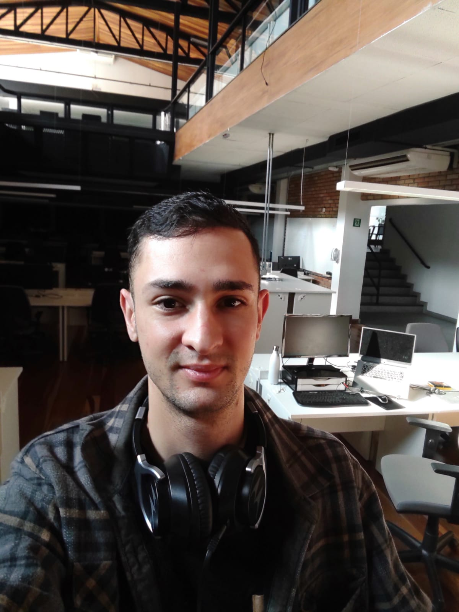

|  |
Diego dos Santos Borges
Analista de fraude Jr. Iniciando em programação web. |
Trabalhou atualmente como analista de fraude jr, gosto da minha área em evitar fraudes no dia a dia, mas sempre tive curiosidade na área tecnológica. Nunca aprofundei tanto sobre esse assunto, somente depois que um familiar ingressou na área, é que eu descobrir mais em como é construindo um site do zero. Eu fiquei fascinado e com vontade de aprender, futuramente ingressar no mundo do programador web.
Falando um pouco sobre mim. Eu gosto de games, sou aquele amante de Playstation, assisto muito animes, exemplos: Boku no Hero, One Piece, Black Clover, entre outros, gosto de sair, viajar, tenho duas gatas, um gato, uma filha de 5 anos e esposa. Bom basicamente é isso.
Passatempo
- Jogar game
- Leitura com temas de fantasias
- Filmes
- Cozinhar ouvindo músicas
Educação
- Cursando Ciência da Computação, 2º Semestre - Faculdade das Américas
- E.E.Joaquim Leme do Prado, Ensino Médio Completo - ano 2011
Experiência Profissional
| Empresa |
Datas |
| Open Co - Analista de Fraude. |
Atualmente |
| Teleperformance - Operador de Fraude. |
03/2019 - 08/2021 |
| Hsprevent - Analista de Fraude Pleno. |
08/2016 - 02/2018 |
Habilidades
Contato